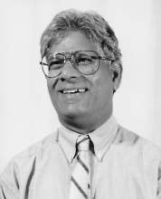

Please note: the AAS Obituaries are temporarily being hosted on this website while their full content is being ingested into the PubPub publishing platform newly adopted by the Bulletin of the American Astronomical Society. When the migration is complete, your existing links will take you to the final, migrated content. Contact peter.williams@aas.org with any questions.
Natarajan Visvanathan (1932-2001)
Known to his astronomical colleagues simply as 'Vis', Natarajan Visvanathan enjoyed their deep affection and esteem throughout his full and productive career. He was born on 23 February 1932 in Sankarankoil, Madras, India. His father, Natarajan Iyer was a criminal lawyer while his mother, Gangai Ammal was a housewife. In the year prior to Vis’s birth, his parents lost seven of his older siblings in a cholera epidemic. Vis was a precocious student and excelled in mathematics and Carnatic music. After completing a BSc in 1952 at Madras University in Thiruchi, he took some additional meteorological training and then joined the staff of the Kodaikanal observatory where he worked as a research assistant to Vainu Bappu.
Vis's association with Mount Stromlo spanned two phases—first as a graduate student in the early 1960s, and later as a staff member until his retirement in 1997. Recruited by Stromlo’s Director, Bart Bok, Vis first came to Mount Stromlo to undertake his PhD studies in 1962. Bok had a passion for working with students, and an urgent desire to establish a world-class graduate school at Stromlo. Right from the start, Bok wanted his program to be international in composition and ethos, so he contacted colleagues around the world persuading them to act as his recruiting agents. Bappu, a former student of Bok's at Harvard, recommended Vis to Bok as a young scientist of the caliber he was seeking. Vis was among the first dozen students whom Bok appointed.
Vis chose as his area of thesis research the technically demanding field of polarimetry. This involves using special filters at the telescope to investigate how the light from individual stars has been affected by the presence of magnetic fields and dust particles on its long journey through space. In 1965 Vis submitted a thesis entitled “Polarization in the Galaxy and the Large Magellanic Cloud,” and graduated with his PhD in May of the following year.
In 1966, Vis went to Mount Wilson and Palomar Observatories in California as a Carnegie Fellow. With his experience in polarimetry, he used the large telescopes there to make polarization observations of radio galaxies. He showed for the first time that the optical light from some of these objects does not come from stars; it is primarily synchrotron radiation emitted by electrons moving in a magnetic field.
While in California, Vis began a long and productive collaboration with Allan Sandage. Together they did a memorable polarization study of the filaments in the starbursting galaxy M82. They showed that the light of these filaments is polarized because it comes from the hidden inner regions and is scattered by dust. This was a novel and influential idea. From 1968 to 1972, Vis was a Research Associate and Lecturer at Harvard, returning to the Hale Observatories and California Institute of Technology as a Visiting Associate from 1972 to 1975.
In 1975, Vis returned to the Mount Stromlo as a staff member. The observatory became his career home for the rest of his working life. Here his interests moved to galaxy photometry, the field that made him famous. The colors of galaxies depend on how bright the galaxies are: very bright galaxies are systematically redder, because their stars have different chemical properties from those in the fainter galaxies. This is called the color-luminosity (C-L) relation for galaxies. It seems to be a universal relation, the same everywhere in the nearby universe. Vis developed the techniques to measure the C-L relation precisely, and acquired his well-deserved reputation as one of the few people in the world who could do precise and reliable photometry of galaxies.
The high point of Vis's work on galaxy colors came in a series of very influential papers with Sandage in the late 1970s, on the C-L relation for elliptical and S0 galaxies. These papers are still much cited, with more than 200 references for each paper in the series. One can use the C-L relation to measure the distances to galaxies, and in this way to estimate the elusive Hubble constant that, in turn, tells us how fast the Universe is expanding, thus yielding an estimate for its age. In the late 1970s, there was considerable controversy about the value of the Hubble constant. It was a stormy time in extragalactic astronomy. Vis used his observations to derive a value that disagreed with the value favored by most other workers at the time. He had the courage to stand by what his data were telling him. Now, twenty years later, we think we know the true value of Hubble's constant, and it turns out that the result that Vis obtained was very close to the current estimate.
Although Vis will be remembered particularly for his work on galaxy photometry, he had other research interests, deriving from his photometric skills. Two stand out:
- With Don Mathewson and Vince Ford, Vis made an exciting study of the Small Magellanic Cloud, which showed that it is being ripped apart by its interaction with the neighboring Large Cloud
- Vis had a long interest in a kind of magnetized variable star called AM Herculis objects—these show some dramatic changes that can be studied well with the photometric techniques that Vis was expert in. With Dayal Wickramasinghe and others, Vis published several papers about these stars.
Vis was an enthusiastic researcher and passed his enthusiasm on to his PhD students - David Griersmith, Andrew Pickles, Glen Mackie, and Anya Schroeder. We shall miss Vis, and we shall remember him.
In 1961, Vis married Gomathi and the couple had one son, Kumar, and two daughters, Kala and Sudha. All three children obtained graduate degrees and are practicing in various biological or medical fields. We sympathize with his family in their sad loss when Vis died suddenly, while swimming at Stradbroke Island on 3 August 2001.
Obituary written by: Don Faulker (Research School of Astronomy and Astrophysics, Australian National University), Ken Freeman (Research School of Astronomy and Astrophysics, Australian National University), John Norris (Research School of Astronomy and Astrophysics, Australian National University)
BAAS Citation: BAAS, 2002, 34, 1386
SAO/NASA ADS Bibcode: 2002BAAS...34.1386F